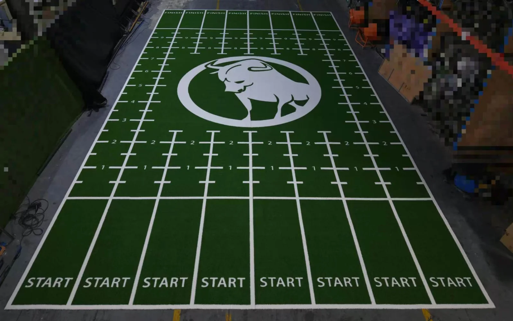
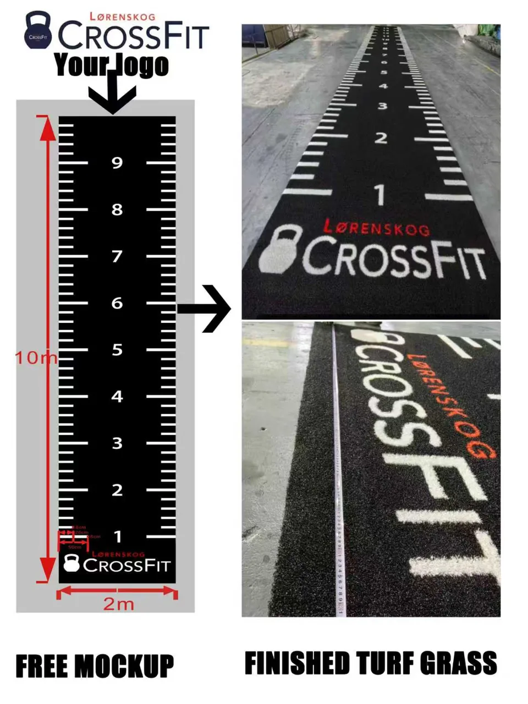
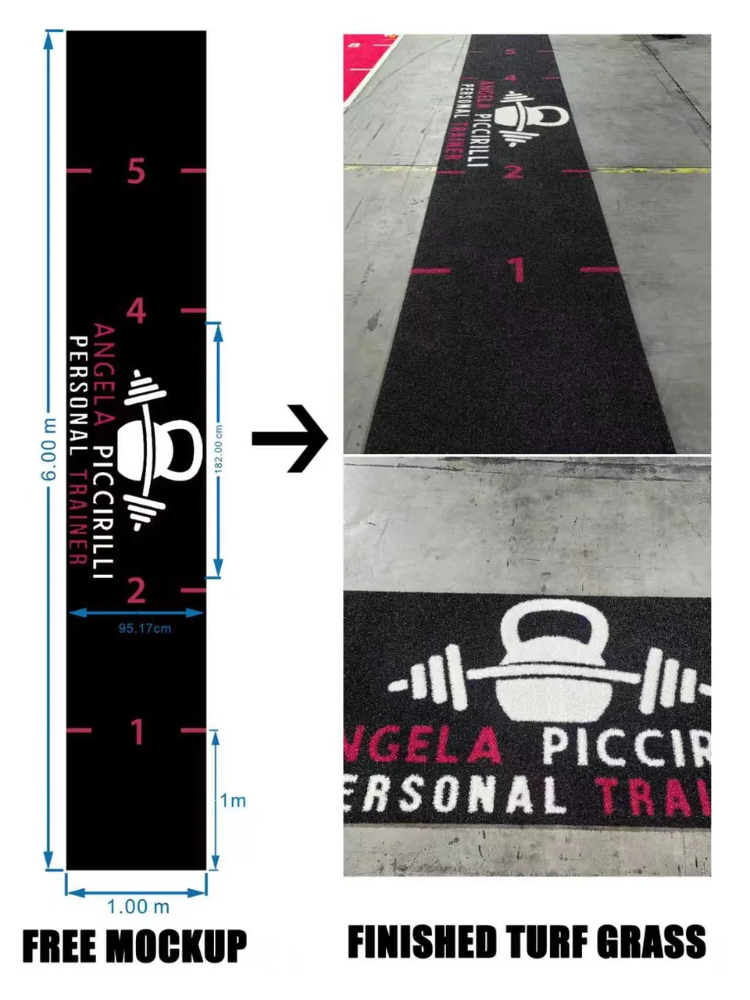
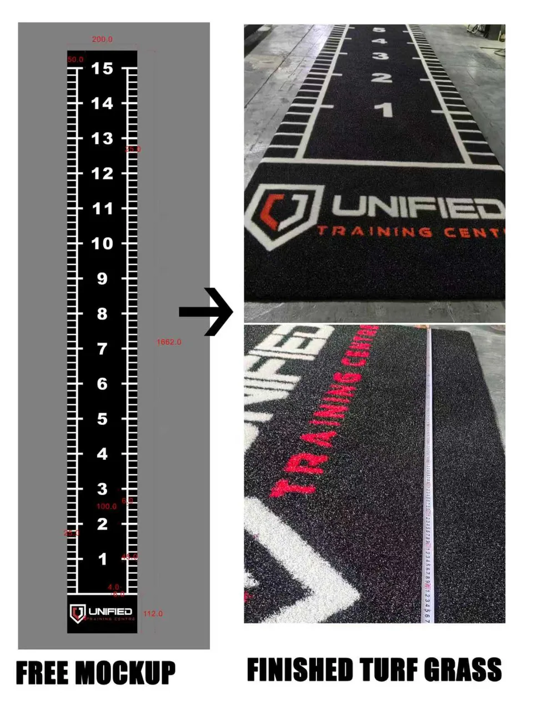
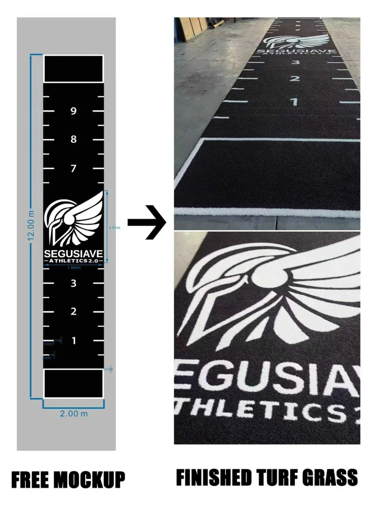
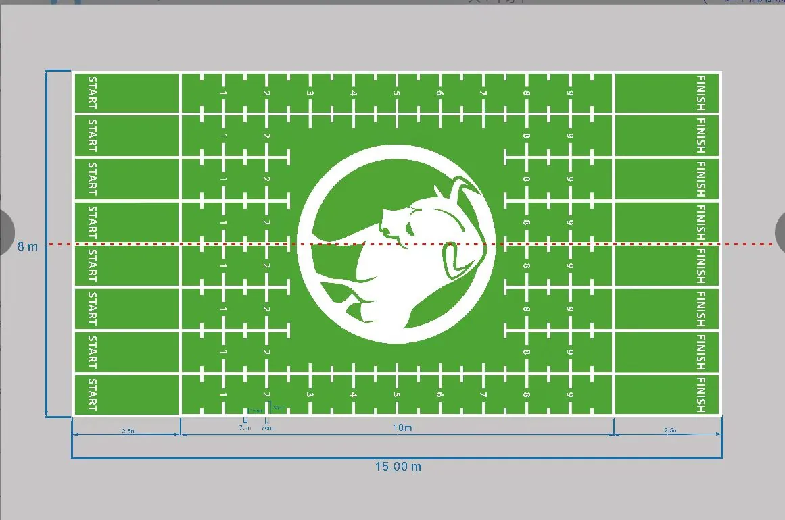
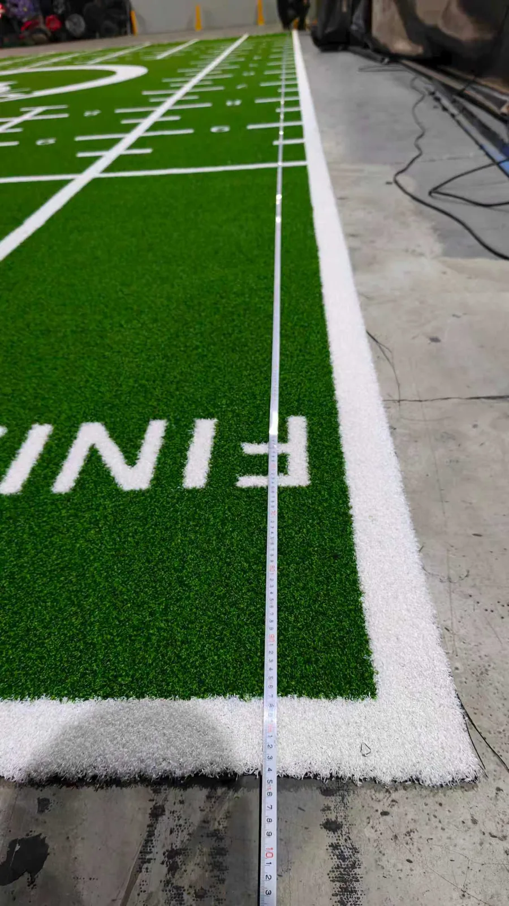
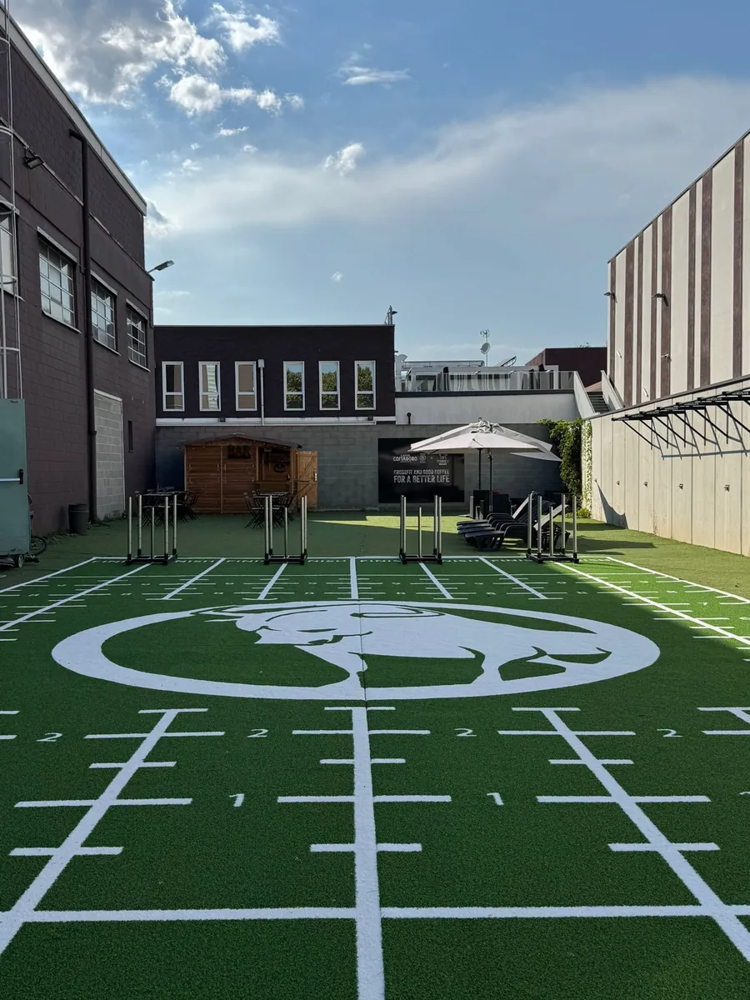
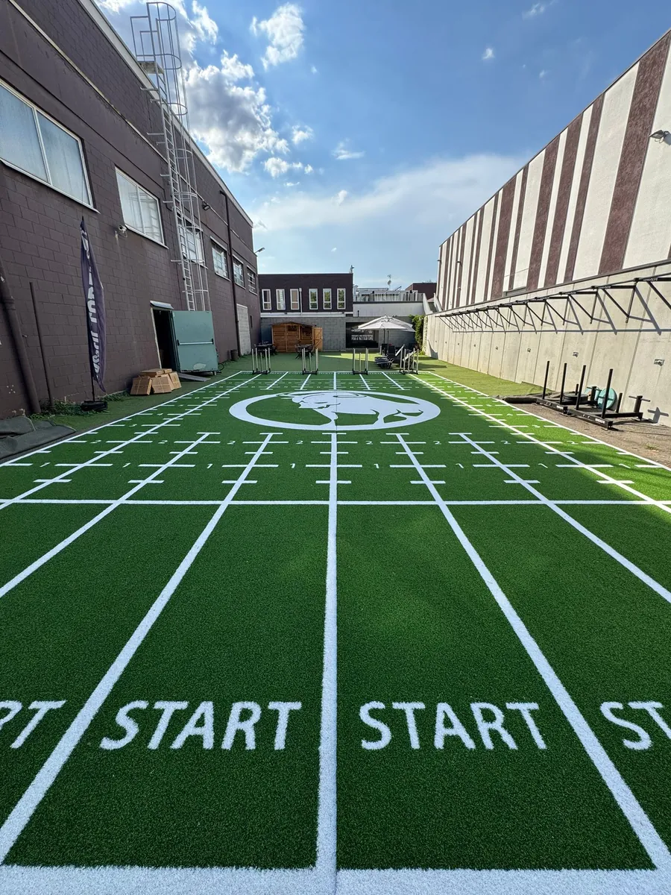

Blog / Custom Gym Turf Design
Custom Gym Turf With Logo: From Your Design to a Finished Training Zone

Short answer: to turn an idea into custom gym turf with a logo, start with the real floor dimensions, training purpose, logo file, colors, markings, viewing direction and installation conditions. The supplier should then convert those inputs into a production layout that resolves scale, seams, roll direction and artwork alignment before manufacturing begins.
A logo alone is not a finished turf specification. A successful custom training surface connects visual design with how people will push sleds, sprint, lunge, turn, coach and move equipment through the space. It also has to arrive in roll sizes the installer can handle and align on site.
This guide explains the UMAX design-to-delivery workflow and uses authorized project examples to show how customer concepts become custom printed gym turf, marked sled lanes and larger commercial training zones.
1. Start With the Training Zone, Not Just the Logo
The first design question is not “Where should the logo go?” It is “How will this area be used?” A sled lane, sprint strip, group-training floor and branded welcome zone do not need the same markings or visual hierarchy.
Before artwork begins, confirm:
- finished turf width and length, measured at several points if the site is irregular;
- indoor or outdoor application and the existing substrate;
- sled pushing, pulling, sprinting, lunges, group circuits or display use;
- number of lanes, usable travel distance and start/stop space;
- equipment locations, columns, doors, walls, drains and floor transitions;
- the direction from which members and cameras will usually view the design;
- delivery destination, access restrictions and installer handling limits.
For a commercial project, send a dimensioned floor plan rather than relying on a photo. If the project includes turf beside rubber flooring, confirm the finished build-up of both systems so the installer can plan a practical transition.
When comparing a gym turf manufacturer, ask whether the team reviews artwork, roll divisions and installation information—not only whether it can add a logo. If the main application is sled track turf, also provide the sled-foot material, intended loads and daily training frequency so the surface can be tested around real use.
2. Send Artwork That Can Be Scaled Cleanly
Vector artwork is the safest starting point for a large logo because it can be scaled without creating a pixelated edge. Preferred file types include AI, EPS, SVG and editable PDF. Convert fonts to outlines or provide the font files so letters do not change when the artwork is opened.
A high-resolution PNG or JPG can still be used for an initial mockup. If it must be recreated as vector artwork, approve the redrawn shapes, spacing and lettering before production. A phone screenshot is useful for explaining an idea, but it should not silently become the final production master.
| Information | What to send | Why it matters |
|---|---|---|
| Floor size | Dimensioned plan in millimetres, centimetres or metres | Defines true artwork scale and roll layout |
| Logo | AI, EPS, SVG or editable PDF when available | Protects edge quality at large size |
| Colors | Reference codes plus a visual sample | Creates a common approval reference |
| Text | Final spelling, capitalization and font | Prevents production-stage copy errors |
| Markings | Numbers, intervals, start/finish labels and line widths | Connects graphics to the training program |
| Viewing direction | Arrow on the floor plan | Keeps logos and wording facing the intended entrance or camera |
| Installation | Substrate, adjacent flooring and site photos | Supports seam, edge and adhesive planning |
3. Convert the Concept Into a Production-Ready Layout
A mockup should do more than make the design look attractive. It should show the finished overall size, logo size and position, measurement intervals, line widths, reading direction and the relationship between every graphic element.
For custom turf lane markings, the design team should check whether numbers remain visible when a sled or athlete occupies the lane. Keep important graphics away from planned seams and avoid placing small lettering where pile texture will make it difficult to read. On a multi-lane floor, use a consistent reference point so repeated markings stay aligned across rolls.
The examples below show different ways to combine client branding with functional marks. Each image pairs the approved design direction with the produced turf.




4. Approve More Than a Pretty Rendering
Before production, confirm the artwork and the physical product specification together. A good approval sheet identifies the product construction, nominal pile height, finished dimensions, base color, graphic colors, artwork orientation, quantity and permitted tolerances.
Screen color is not a physical color standard. Different monitors, yarn materials and lighting can change appearance. If an exact brand color is commercially critical, request a project-specific sample or other agreed physical reference and document the accepted variation before the full order.
Also review the roll plan. One very long roll may reduce seams, but it can become harder to pack, unload, carry through a doorway and position accurately. The best plan balances visual continuity with shipping and installation reality.
Do not release production until these items are signed off:
- overall dimensions and units;
- logo proportions, spelling and viewing direction;
- line positions, intervals, numbers and start/finish labels;
- turf and graphic color references;
- roll divisions, seam positions and piece labels;
- product construction and installation direction;
- packing marks, delivery address and access constraints.
5. Production, Quality Control and Installation Handoff
Once the layout and product specification are approved, the artwork should remain under version control. Put a date or revision number on the approved file so the buyer, production team and installer are working from the same layout.
Quality control should compare the finished turf with the approved order details: roll dimensions, artwork presence and direction, general color appearance, edge condition, piece labels and packing. For a multi-roll graphic, photograph the pieces in a way that helps the installer understand their sequence.
Installation is part of performance. Public discussions among gym owners repeatedly raise questions about turf bunching, migration, wrinkling and how to secure it. Those concerns appear in recent conversations about commercial gym flooring, home-gym sled turf and the difference between budget grass and purpose-selected turf.
For repeated sled use, treat the turf, substrate, compatible adhesive, seams, curing time and edge detailing as one system. Do not assume ordinary landscape artificial grass will behave like purpose-selected commercial gym turf. Test the proposed construction with the actual sled skids and loads whenever possible.
Reddit links above are used to identify recurring buyer questions, not as product-test evidence. Final installation requirements should be confirmed for the specific site and materials.
6. From Artwork to a Large Finished Training Area
Large custom areas require more coordination than a single narrow lane. The artwork must be mapped across available production widths while preserving the visual relationship between logos, numbers and training stations.




A second installed view helps verify how the custom graphics read alongside the surrounding equipment and circulation space.All project images in this article feature products manufactured by UMAX and are displayed with client permission. Customer logos and brand elements remain the property of their respective owners. The examples show manufacturing capability; they do not imply endorsement, sponsorship or affiliation.
7. Seven Custom Gym Turf Mistakes to Avoid
- Designing before measuring. A visually balanced mockup can fail if the actual floor narrows, contains columns or ends at a doorway.
- Sending only a small screenshot. It may be enough for discussion but not for sharp, large-format production.
- Leaving the viewing direction unclear. Text can face the wrong entrance when the layout is installed.
- Choosing markings without a training plan. Decorative numbers are less useful than intervals tied to real coaching sessions.
- Ignoring seams until installation. Seams can interrupt a logo or misalign a line if they are not resolved in the production layout.
- Assuming thicker turf is always better. Pile height is only one variable. Compare construction, sled interaction, cleaning, roll weight and project cost.
- Approving a rendering but not the specification. Artwork, product construction, dimensions, color reference and packing plan all need approval.
UMAX GYMMX Custom Commercial Gym Turf
A current project reference can use 100% PE yarn with PP + SBR backing, a standard 2m width and a practical 15mm pile-height direction. Custom width, pile height, color, logo, numbers and training markings are available subject to project review and final order confirmation.
Tell us the lane size, training use, substrate and destination. We can help turn your floor plan and artwork into a reviewable layout before quotation and production approval.
Request a Custom Turf MockupFrequently Asked Questions
What files are needed for custom gym turf with a logo?
Send the finished lane dimensions, a vector logo when possible, required colors, text and markings, viewing direction, substrate information and delivery destination. Include a dimensioned floor plan for a larger or irregular area.
Can UMAX work from a JPG, sketch or floor plan?
Yes. Those files can start the concept. AI, EPS, SVG or editable PDF is preferred for sharp production artwork. If a logo must be redrawn, approve the recreated version before manufacturing.
Can colors, numbers and lane markings be customized?
Yes. Custom color gym turf can include logos, numbers, distance marks, start and finish areas and other functional graphics, subject to artwork and production confirmation.
Will custom gym turf move or wrinkle during sled training?
Movement depends on the complete system: backing, substrate, adhesive, seams, curing and sled use. Repeated commercial sled training normally needs a properly prepared and correctly bonded installation.
Is landscape artificial grass suitable for sled training?
Not automatically. Select commercial gym turf around pile construction, density, backing, skid interaction, load, training frequency and installation. Test the proposed turf with the actual sled before approval.
How should a large custom turf area be divided into rolls?
Balance width, roll weight, shipping, door access, seam direction, artwork alignment and installer handling. Confirm the numbered roll map before production.
Does showing a customer's logo mean an official brand partnership?
No. The authorized images document turf produced by UMAX for customer projects. Customer brand elements remain their owners' property and do not by themselves indicate endorsement, sponsorship or affiliation.